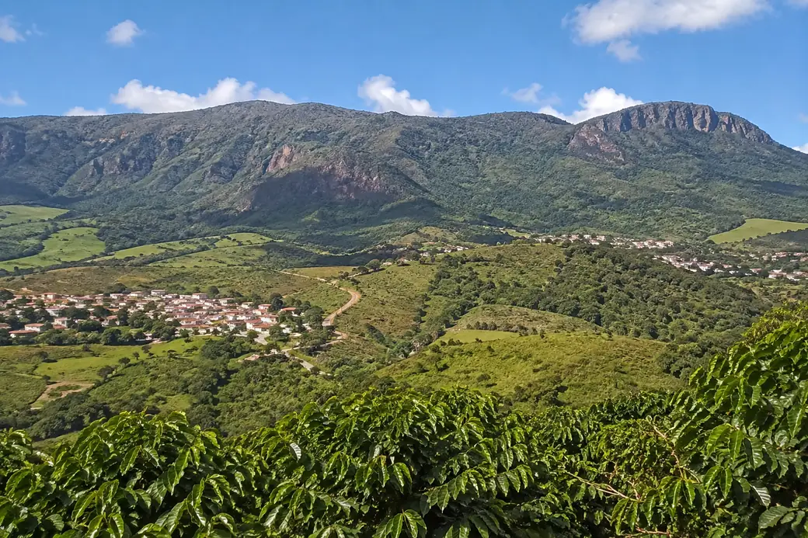
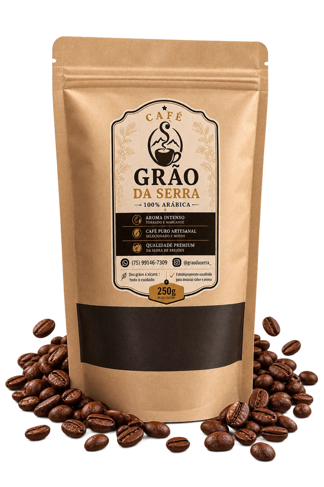
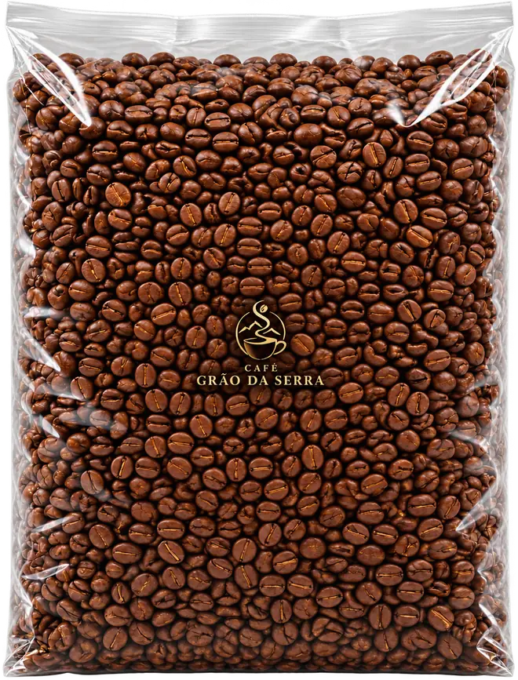

Café arábico da Serra de Brejões / BA
Do Distrito Serrana / BA para a sua xícara ou para o seu negócio.
Café 100% arábica, grãos selecionados e torra cuidadosa. Uma experiência de qualidade para quem aprecia um bom café, seja em casa, no trabalho ou no seu negócio.
- Grãos 100% arábica
- Do interior da Bahia
- Torra artesanal
- Atacado e varejo
-
Grãos 100% arábica
-
Do interior da Bahia
-
Torra artesanal
-
Atacado e varejo
Nossa origem
Do interior da Bahia para a sua xícara.
A Serra de Brejões, no coração da Bahia, oferece o terreno perfeito para cafés: altitude, clima e solo fértil que resultam em grãos de alta qualidade e sabor marcante. É de lá que nasce o Grão da Serra.
Peça o seu café
Nosso café
Qualidade que você sente em cada xícara.
Grãos selecionados, torra artesanal e um cuidado que vai da escolha do grão à entrega. Tudo para um café marcante no seu dia a dia e no seu negócio.


Feito para o seu negócio e para a sua casa.
-
Para tomar
em casa -
Cafeterias
-
Restaurantes
e Bares -
Hotéis
e Pousadas -
Padarias
e Confeitarias -
Mercados
e Empórios -
Empresas
e Escritórios -
Revendedores
e Distribuidores
Como comprar
Simples, rápido
e direto com a gente.
-
1
Preencha o formulário com suas informações e necessidades.
-
2
Fale conosco no WhatsApp e receba seu orçamento personalizado.
-
3
Feche seu pedido e receba seu café com agilidade e segurança.
Como comprar
Peça o seu café
Preencha os dados abaixo e faça seu pedido pelo WhatsApp.